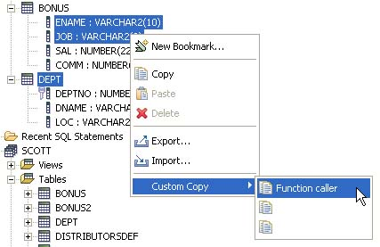

The Custom Copy feature is meant to allow the user to customize the copy format of tables and columns.
How to use : You are in the Bookmarks View. You select the tables, views and columns that you want to copy. Be sure that only tables, views and columns are selected. Then you select "Custom Copy" in the context menu (Note that the Custom Copy menu item will only appear if you have defined at least one Custom Copy in the preferences.) By default, a blank sub-menu will appear. You have to customize it to do something.
How to customize : You go to the Window > Preferences , then QuantumDB > Copy > Custom Copy 1. You can have up to three different templates, that will appear in the sub-menu with the names you give to them. So you start the Custom Copy 1 preferences page.
There you have some boxes to fill up. The idea is that you will have a list of tables (from now on, tables will mean "tables and views"). This list of tables is composed of the directly selected tables plus the implicitely selected (because a column of it is selected). You choose a general template format, and the formats of the lists and items. The possible variables you have to play are:
${schema} The schema of the table or column. Valid in all format specifiers except Template.
${table} The table name, without schema. Valid in all format specifiers except Template.
${qualified} Same as ${schema}.${table} Valid in all format specifiers except Template.
${column} The column name. Only valid for Column specifiers.
${column_list} The list of all columns. Only valid for Table specifiers.
${table_list} The list of all tables. Only valid in Template. This is the only variable that can be used in Template.
\n Inserts a new line
\t Inserts a tab character
It's faster to explain by example. Suppose I select the columns ENAME and JOB from the table BONUS in schema SCOTT, and also the entire table DEPT from same schema.
The selected tables and columns are:
BONUS (implicit) ENAME (selected) JOB (selected) DEPT (selected) DEPTO (implicit) DNAME (implicit) LOC (implicit)
Now we set in the Custom Copy 1 preferences page the values:
And call the custom copy just defined:

The copied text in the clipboard will be:
// Generated code
Call_Func(ENAME, JOB)
Call_Func(DEPTNO, DNAME, LOC)
//End of generated code
If I want only a list of columns, I can set:
The result will be:
(SCOTT.BONUS.ENAME, SCOTT.BONUS.JOB, SCOTT.DEPT.DEPTNO, SCOTT.DEPT.DNAME, SCOTT.DEPT.LOC)